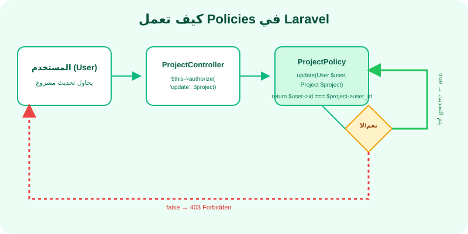
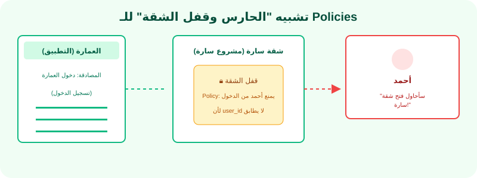

الصلاحيات Policies: من يحق له تعديل المشروع؟
"بعد أن عرفنا من أنت (المصادقة)، الآن نحدد ماذا يُسمح لك أن تفعل (الترخيص)."
1. ما هي Policies؟ (الترخيص - Authorization)
في الدرس السابق تعلمنا المصادقة (Authentication) - وهي التأكد من هوية المستخدم. لكن تخيل أن "أحمد" و "سارة" مستخدمان مسجلان في FlowPilot. أحمد لديه مشاريعه الخاصة، وسارة لديها مشاريعها الخاصة. هل نريد لأحمد أن يتمكن من حذف مشاريع سارة؟ بالتأكيد لا!
هنا يأتي دور الترخيص (Authorization) أو Policies. هو نظام يضع قواعد وشروط لكل عملية في التطبيق: من يمكنه عرض هذا المشروع؟ من يمكنه تعديله؟ من يمكنه حذفه؟
📌 الفرق بين Authentication و Authorization:
المصادقة (Authentication): "من أنت؟" ← البريد الإلكتروني + كلمة المرور.
الترخيص (Authorization): "ماذا يُسمح لك أن تفعل؟" ← هل تملك صلاحية تعديل هذا المشروع؟
2. إنشاء Policy وتسجيلها (Registering Policies)
الـ Policy في Laravel هي كلاس (فئة) يحتوي على دوال تحدد صلاحيات مستخدم معين لنموذج (Model) معين. مثلاً، ProjectPolicy يحدد من يمكنه view أو update أو delete مشروعاً معيناً.
🔧 إنشاء Policy جديدة
لإنشاء Policy، استخدم أمر Artisan:
🔍 هذا الأمر ينشئ ملف app/Policies/ProjectPolicy.php يحتوي على دوال جاهزة: viewAny, view, create, update, delete, restore, forceDelete.
📋 تسجيل Policy في AuthServiceProvider
يجب تسجيل كل Policy في ملف app/Providers/AuthServiceProvider.php:
🔍 شرح الكود:
- $policies: مصفوفة تخبر Laravel: "عند التعامل مع Project Model، استخدم ProjectPolicy لتحديد الصلاحيات".
- Project::class => ProjectPolicy::class: المفتاح هو اسم الموديل، القيمة هي اسم الـ Policy.
- registerPolicies(): تستدعى في الدالة
boot()لتفعيل كل الـ Policies المسجلة.
3. طرق Policy: view, create, update, delete
كل Policy تحتوي على دوال (طرق) تمثل العمليات المختلفة التي يمكن تنفيذها على الموديل. دعنا نرى كيف تكتب كل دالة:
🔍 شرح الكود سطراً سطراً:
- public function view(User $user, Project $project): تستقبل المستخدم الحالي والمشروع المطلوب. ترجع
trueإذا سمحت،falseإذا منعت. - return $user->id === $project->user_id: تقارن معرف المستخدم الحالي مع معرف المالك (user_id) للمشروع. إذا تطابقا، يرجع
true. - create(User $user): لا تأخذ
$projectلأنه لم يتم إنشاؤه بعد. ترجعtrueلكل المستخدمين المسجلين. - delete(...): نسمح بالحذف إذا كان المستخدم هو المالك أو (
||) إذا كان المستخدم مشرفاً (is_admin).
4. استخدام authorize() في Controller
بعد أن كتبنا الـ Policy، كيف نستخدمها داخل الـ Controller؟ ببساطة، نستدعي الدالة authorize() التي توفرها Laravel:
🔍 شرح الكود:
- $this->authorize('view', $project): هذا السطر يستدعي الدالة
view()منProjectPolicy. إذا رجعتfalse، Laravel تلقائياً يرسل خطأ 403 (Forbidden). إذا رجعتtrue، يكمل تنفيذ الكود. - authorize('create', Project::class): للدوال التي لا تحتاج لكائن موجود (
create) نمرر اسم الكلاس (Project::class) بدلاً من الكائن. - redirect()->with('message', ...): بعد النجاح، نعيد التوجيه مع رسالة flash (مؤقتة) تظهر في الواجهة.
5. التحقق من الصلاحيات في React باستخدام @can
أحياناً نريد إخفاء أو إظهار أزرار في الواجهة بناءً على صلاحيات المستخدم. مثلاً، إخفاء زر "تعديل" إذا كان المستخدم لا يملك صلاحية التعديل. في Inertia مع Blade، نستخدم @can. لكن في React، نستخدم نهجاً مختلفاً:
🔍 شرح الكود:
- user?.id === project.user_id: "أم آمنة" (Optional Chaining) تمنع الخطأ إذا كان
userيساويnull. - {canUpdate && (...)}: إذا كان
canUpdateيساويtrue، يعرض زر التعديل. إذا كانfalse، لا يظهر أي شيء. - ملاحظة مهمة: هذا هو التحقق الأمامي (Frontend). التحقق الخلفي (في Controller) هو الأهم والأمن. التحقق الأمامي فقط لتجربة المستخدم.
🛡️ قاعدة أمان مهمة: التحقق المزدوج
لا تعتمد فقط على التحقق في الواجهة الأمامية (React). يجب أن يكون التحقق في الخلفية (Laravel Controller) هو خط الدفاع الأول. تحقق الواجهة هو لتجربة مستخدم أفضل فقط.
🎯 مثال من الواقع: حارس العمارة
تخيل أنك تدخل عمارة سكنية.
المصادقة: حارس البوابة يسألك "من أنت؟" وتريه هويتك. هذا هو Authentication - تأكد من أنك شخص حقيقي.
الترخيص (Policy): بعد أن يدعك الحارس يدخل، تقف أمام شقة جارتك. تريد فتح بابها. هنا يأتي دور "قفل الشقة" أو Policy. حتى لو كنت داخل العمارة (مصادقاً عليه)، لا يمكنك فتح باب شقة لا تملكها.
FlowPilot: المستخدم (أحمد) داخل التطبيق (مصادق). لكنه يحاول فتح مشروع سارة. هنا ProjectPolicy هو "قفل الشقة" الذي يمنعه لأن user_id لا يساوي id أحمد.
6. FlowPilot: ProjectPolicy و TeamMember
في FlowPilot، المشاريع ليست مملوكة فقط لشخص واحد. أحياناً يكون فريق العمل بأكمله يحتاج الوصول لنفس المشروع. لهذا، Policy الخاص بنا يجب أن يكون أذكى من مجرد مقارنة user_id.
🔑 بهذه الطريقة، أعضاء الفريق يستطيعون رؤية المشروع والتعاون عليه، لكن التعديل والحذف يبقى حصراً على المالك.
7. التطبيق العملي: 6 خطوات لتطبيق Policies
الخطوة 1: إنشاء Policy للمشاريع
🔍 هذا الأمر ينشئ الملف app/Policies/ProjectPolicy.php في مشروعك.
الخطوة 2: تسجيل Policy في AuthServiceProvider
افتح app/Providers/AuthServiceProvider.php وأضف:
الخطوة 3: كتابة دوال Policy
افتح app/Policies/ProjectPolicy.php واكتب دوال view, create, update, delete كما شرحنا سابقاً.
الخطوة 4: استخدام authorize() في Controller
في ProjectController، أضف سطر $this->authorize() قبل كل عملية:
الخطوة 5: اختبار الصلاحيات
أنشئ مستخدمين اثنين (أحمد وسارة). اجعل أحمد ينشئ مشروعاً. ثم سجل الدخول بحساب سارة وحاول فتح مشروع أحمد. يجب أن تظهر رسالة 403 (Forbidden).
الخطوة 6: (تحدي) إخفاء أزرار التعديل في React
في صفحة عرض المشروع (React)، أضف شرطاً يتحقق من أن المستخدم الحالي هو المالك قبل عرض أزرار "تعديل" و "حذف".
8. النتيجة المتوقعة
- ✅ المستخدم يرى فقط المشاريع التي يملكها (أو هو عضو فيها).
- ✅ لا يمكن لأي مستخدم حذف أو تعديل مشروع لا يملكه.
- ✅ تظهر رسالة 403 عند محاولة الوصول غير المصرح به.
- ✅ أزرار التعديل والحذف تختفي للمستخدمين غير المالكين.
9. الأخطاء الشائعة
❌ الخطأ 1: "This action is unauthorized." يظهر دائماً حتى للمالك
السبب: Policy غير مسجلة في AuthServiceProvider أو أن شرط المقارنة خاطئ.
الحل: تأكد من تسجيل الـ Policy في $policies وتأكد من أن user_id في المشروع يطابق id المستخدم.
❌ الخطأ 2: "Call to undefined method" عند استخدام authorize()
السبب: الـ Controller لا يرث من App\Http\Controllers\Controller الأصلي.
الحل: تأكد أن كلاس Controller يمتد (extends) Controller.
❌ الخطأ 3: Policy لا تطبق لأنها لم تنشأ بـ --model
السبب: إنشاء Policy بدون العلامة --model=Project لا ينشئ الدوال الافتراضية.
الحل: استخدم الأمر php artisan make:policy ProjectPolicy --model=Project.
❌ الخطأ 4: المستخدم يمكنه رؤية مشاريع الآخرين رغم وجود Policy
السبب: قد يكون السبب أنك تنسى استخدام authorize() في بعض الدوال في Controller.
الحل: أضف $this->authorize('view', $project) في كل دوال Controller التي تتعامل مع المشاريع.
10. مخططات توضيحية

مخطط: كيف تعمل Policies

تشبيه: الحارس وقفل الشقة
🧠 ملخص الدرس
🔹 Policies (الترخيص): تحدد من يمكنه فعل ماذا في التطبيق.
🔹 إنشاء Policy: php artisan make:policy ProjectPolicy --model=Project.
🔹 تسجيل Policy: في AuthServiceProvider.php عبر مصفوفة $policies.
🔹 دوال Policy: view (عرض)، create (إنشاء)، update (تعديل)، delete (حذف).
🔹 استخدام authorize(): $this->authorize('update', $project) في Controller.
🔹 التحقق في React: مقارنة user.id === project.user_id لإخفاء/إظهار الأزرار.
🔹 FlowPilot: المالك يتحكم بالمشروع، والأعضاء يمكنهم فقط المشاهدة.
💡 القاعدة الذهبية: تحقق من الصلاحية في الخلفية (Laravel) أولاً، ثم في الواجهة (React) لتحسين تجربة المستخدم!